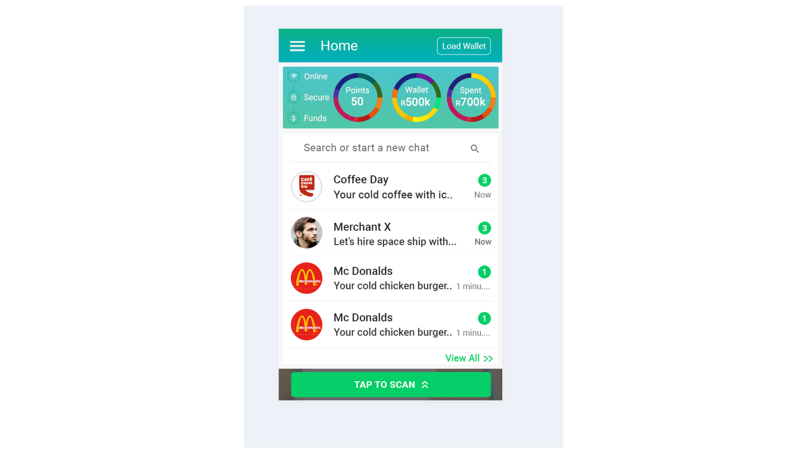

What is Wax'd?
Wax'd is an payment app for South African market which facilitates the transaction between customers and merchants.
Synopsis:
Creating the safest and convenient Payment App in South Africa. My initial aim was to make the experience easy and engaging. I worked with the founders and successfully launched the app. We discussed and found the points
that would make payment a better process. Understanding the south african market, we decided on chat bot for signup and scanning bar code for easy payment with the tied merchants as a better approach.
Target customers:
The target customers were south african users with internet and smartphone.
Information architecture:
Based on the given brief, coming up with information architecture for each use case. We wanted the app to be engaging and to do so, we went with chat bot approach for the entire app experience.
My main aim was to think about how to guide the customer to have a flawless and engaging experience. I looked at other competitors and was trying to address the problem of sign up being a tiresome and long process.
Low fidelity wireframes:

Continuing from the mindmap, I started creating low fidelity wireframes with android first approach.
Style guide:
Color palette was created based on the existing logo and clarity of text was in chat bubbles played dominant while choosing the font.
High fidelity wireframes:
Visual data represented in top with information of points spent and existing amount including a small icons showing if app is online and secured.
Rest of the screens followed the low fidelity wireframes.